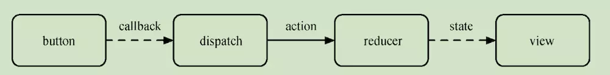
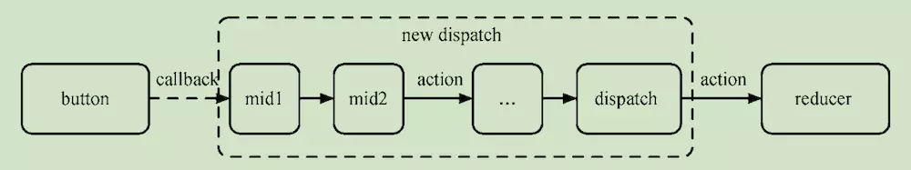

前言
最近对项目中使用的Redux中间件进行了梳理，在此过程中对Redux中间件的原理也有了较为深刻的理解。所以抽空总结了一下，也希望能给读者们带来一些启发。
这篇文章会介绍Redux中间件的工作机制，并通过源码分析来了解其原理，最后会通过一个例子介绍如何编写Redux中间件。
Redux中间件工作机制
用过Redux中间件的朋友都知道redux给我们带来了强大的数据管理功能，然而Redux的强大之处还在于其可以通过扩展中间件来增强和丰富其功能。
其实，Redux中间件的功能就是提供一个自定义处理Action的方式，在middleware中我们可以对流入的action进行筛选，对于选中的action进行一些自定义的操作，最终生成一个新的action并派发（dispatch）下去。
下面通过两张图来对比一下是否使用Redux中间件时的差异。
首先是不使用中间件的redux数据流：

不使用middleware时，在dispatch(action)时会直接送到reducer执行，并根据action的type更新返回相应的state。但在复杂得业务场景下，这种简单的机制很难满足我们的需求。

通过增加中间件，我们就可以在action到达reducer之前对action进行拦截处理。并且middleware是可以自由组合的插件机制，这可以方便我们编写不同的middleware，并按照一定顺序组合这些middleware来满足我们的业务场景需求。简单来说，这个middleware的机制就是对dispatch进行了增强（enhance）。
middleware源码分析
一般我们在业务中会这样添加中间件：1
2
3
4
5
6
7import { applyMiddleware, createStore } from 'redux';
import thunk from "redux-thunk";
import createLogger from 'redux-logger';
const logger = createLogger();
const middleware = [thunk, logger];
const store = createStore(rootReducers, applyMiddleware(...middleware));
重点关注createStore和applyMiddleware这两个方法。
createStore
1 | function createStore(reducer, preloadedState, enhancer) { |
createStore的代码比较长，节选了一部分。这里的enhancer参数即为applyMiddleware()返回的组合后的中间件。
applyMiddleware
1 | function applyMiddleware(...middlewares) { |
applyMiddleware的代码更加简单，只有短短十几行代码。不难看出applyMiddleware的核心就在于组合（compose）中间件。
在分析applyMiddleware之前，我们有必要先看一下一个标准的middleware的写法：1
const standardMidddleware = store => next => action => next(action)
上面这个方法接受一个store参数，也就是上面applyMiddleware源码里的middlewareAPI对象。standardMidddleware方法返回的函数接受一个next参数，这个next也是一个函数，当next执行的时候即表示当前middleware的工作结束，将action交给下一个中间件执行。
我们继续梳理applyMiddleware的流程，可以将其分成下面几个步骤：
1、执行各个middleware，生成一个chain数组
将store的基本方法作为一个对象参数，传递给中间件并依次执行，合并到一个chain数组中。此时chain数组结构如下：1
2
3
4
5
6[
next => action => { doSomething1(); return next(action) },
next => action => { doSomething2(); return next(action) },
next => action => { doSomething3(); return next(action) },
...
]
2、利用compose方法将chain数组中的中间件进行组合
compose方法定义如下：1
2
3
4
5
6
7
8
9
10
11function compose(...funcs) {
if (funcs.length === 0) {
return arg => arg
}
if (funcs.length === 1) {
return funcs[0]
}
return funcs.reduce((a, b) => (...args) => a(b(...args)), v=>v)
}
middleware的设计采用了柯里化的方式，这样就便于compose，从而可以动态生成next方法。applyMiddleware方法中最关键的代码也就是下面这行代码：1
dispatch = compose(...chain)(store.dispatch)
等价于1
dispatch = f1(f2(f3(store.dispatch))))
compose就是这样将middleware一层层嵌套包裹到原始的dispatch方法上，得到一个增强后的dispatch方法。
Redux中间件实践
举一个平常开发中可能遇到的一个例子：
我们在发起网络请求之前会让页面上出现loading的动画，完成请求之后再让loading消失。
在不使用Redux时我们很容易办到：1
2
3
4
5
6
7this.setState({ loading: true });
this.fetchData().then(
resp => {
...
this.setState({ loading: false });
}
);
但当我们使用redux之后，我们会在异步操作中发起网络请求，并将数据存储到Redux store中。由于网络请求被包裹在Redux的异步操作中，我们似乎就没法获取弹出loading的时机了。
这时，Redux的中间件就派上用场了。
对于Redux的同步操作，我们只需要dispatch一种Action即可；但是对于异步操作，需要处理三种Action：
- 操作发起时的 Action
- 操作成功时的 Action
- 操作失败时的 Action
对于发送网络请求的异步操作，对应的三种Action类型可以定义如下：1
2
3
4
5const actionTypes = {
FETCH_xxx_REQUEST: "FETCH_xxx_REQUEST",
FETCH_xxx_SUCCESS: "FETCH_xxx_SUCCESS",
FETCH_xxx_FAILURE: "FETCH_xxx_FAILURE"
};
Reducer方法即为1
2
3
4
5
6
7
8
9
10
11
12
13
14
15
16
17
18
19
20const Reducer = (state = initialState, action) => {
switch(action.type) {
case types.FETCH_xxx_REQUEST:
return { ...state, isFetching: true };
case types.FETCH_xxx_SUCCESS:
return {
...state,
isFetching: false,
resp: action.payload
};
case types.FETCH_xxx_FAILURE:
return {
...state,
isFetching: false,
error: action.error
};
default:
return state;
}
}
可以发现这里使用State的属性isFetching来标识是否在抓取数据。
创建对应的ActionCreator方法返回值需要包含上述的三种action类型：1
2
3
4
5
6
7
8
9
10
11
12
13fetchxxx: () => (dispatch) => {
const endpoint = urlMap.fetchxxx;
return dispatch({
[FETCH_DATA]: {
types: [
types.FETCH_xxx_REQUEST,
types.FETCH_xxx_SUCCESS,
types.FETCH_xxx_FAILURE
],
endpoint,
}
})
}
可以发现返回的action对象跟常规的action
有所不同，并且所有内容都包裹在[FETCH_DATA]对象里面，而这个FETCH_DATA字段也正是用以在中间件中与其他普通action相区分。
这样，我们需要的中间件也就呼之欲出了：1
2
3
4
5
6
7
8
9
10
11
12
13
14
15
16
17
18
19
20
21
22
23
24
25
26
27
28
29
30
31
32
33
34
35
36
37
38
39
40
41
42
43
44const apiMiddleware = store => next => action => {
const callAPI = action[FETCH_DATA]
// 如果action不包含FETCH_DATA字段，直接交给下一个中间件执行。
if (typeof callAPI === 'undefined') {
return next(action)
}
let { endpoint } = callAPI
const { types, body } = callAPI
if (typeof endpoint !== 'string') {
throw new Error('Specify a string endpoint URL.')
}
if (!Array.isArray(types) || types.length !== 3) {
throw new Error('Expected an array of three action types.')
}
if (!types.every(type => typeof type === 'string')) {
throw new Error('Expected action types to be strings.')
}
const actionWith = data => {
const finalAction = {...action, ...data}
delete finalAction[FETCH_DATA]
return finalAction
}
const [ requestType, successType, failureType ] = types
// 发送请求之前，发出类型为‘请求中’的action
next(actionWith({ type: requestType }))
return doRequest(endpoint, body).then(
// 请求成功之后，发出类型为‘请求成功’的action
response => next(actionWith({
payload: response,
type: successType
})),
// 请求失败之后，发出类型为‘请求失败’的action
error => next(actionWith({
type: failureType,
error: error.message || 'Something bad happened'
}))
)
}
上述用于处理网络请求的middleware，可以分成以下几个步骤：
1、判断action是否包含FETCH_DATA字段，如果不包含FETCH_DATA则直接交给下一个中间件执行；
2、在发送请求之前，dispatch类型为‘请求中’的action；
3、请求返回时，如果请求成功，dispatch类型为‘请求成功’的action；否则dispatch类型为‘请求失败’的action。
在上述过程中，发出任一类型的action之后，我们就能获取isFetching状态变化了。
到此，我们需要的中间件就完成了。
（完）